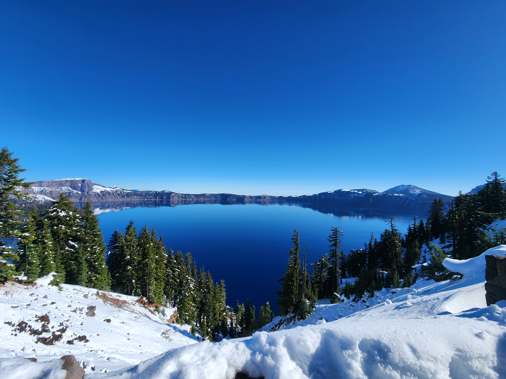

Where I've Been
I started traveling long before I became Jelly Untethered,
but somewhere along the way travel stopped being something
I did and became how I live.
This isn't a complete travel diary. Nobody needs that much scrolling. It's a snapshot of some of the places, landscapes and adventures that have made the journey memorable.
This isn't a complete travel diary. Nobody needs that much scrolling. It's a snapshot of some of the places, landscapes and adventures that have made the journey memorable.
Around the World
Countries, cities, islands and places I didn't expect to love.
By Land & Sea
Cruise ships, planes, trains, buses, cars and occasionally my own two feet.
Always Looking
Wildlife, landscapes, culture and the people I meet along the way.
Across the Map
The list keeps growing. That's rather the point.
🌎 North America
🌍 Europe
🌏 Asia
A Few Memorable Adventures
Not a complete list. Just some places and experiences
that earned permanent space in my memory.
Alaska
Glacier Bay
Denali
Iceland
Mediterranean
Panama Canal
British Isles
Scandinavia
Armenia
Pacific Coast Highway
Yellowstone
Glacier National Park
A Few Views Along the Way
Because sometimes a picture does a better job than another paragraph.




The Journey Is Still Happening
This page is the highlight reel. The daily version is considerably less organized. I share where I am, what I'm doing, the people I meet, wildlife encounters, cruise life, mishaps and everything in between on social media.
Follow the Daily Journey →